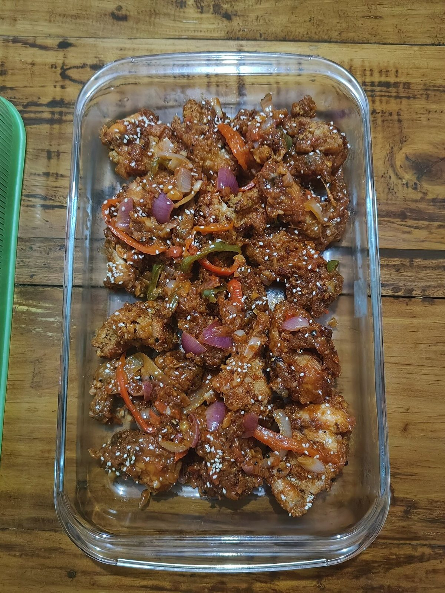
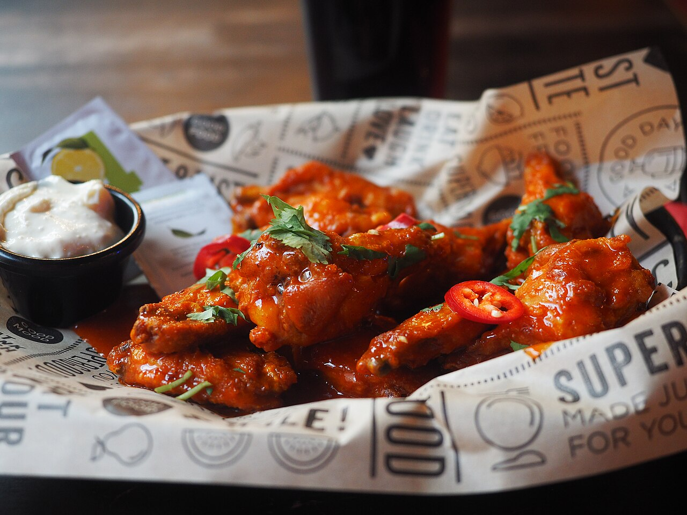

a sauceBuffalo sauce
also: wing sauce · hot sauce and butter · medium
Nobody in a Buffalo kitchen calls it Buffalo sauce. It is the sauce, and you order it by heat: mild, medium, hot.

Cayenne pepper hot sauce cut with melted butter. Two things, warmed together and held warm, poured over fried wings in a metal bowl and shaken. More butter reads mild, less reads hot, and a kitchen moves between the three by changing that ratio rather than the pepper. Worcestershire sauce and garlic powder turn up in plenty of versions. Bottled ready-to-use wing sauce does the same job with oil and butter flavouring in place of butter, because butter separates on a shelf.
The story Cited · wp-buffalo-wing
Cayenne pepper sauce arrived in Buffalo in a bottle. Frank's RedHot came out of Cincinnati and a Louisiana pepper farm in 1920; Crystal came out of New Orleans in 1923. Neither was made for wings.
The sauce got its name in 1964, or later, depending on whose account you take. At the Anchor Bar, Teressa Bellissimo fried wings and tossed them in cayenne sauce; the Bellissimo family told three different versions of that night, and Dominic Bellissimo gave Calvin Trillin one of them in 1980. John Young was selling breaded whole wings in a tomato-based mumbo sauce in Buffalo from 1961, and said the Anchor Bar did not carry wings as a regular menu item until 1974.
Inference — the butter is the part that travelled least well. A wing tossed at the counter gets butter; a wing that has to survive a shelf, a delivery bag or a factory gets oil and a butter flavouring. Frank's RedHot Buffalo Wings Sauce lists canola oil fifth and natural butter type flavour eighth, with no butter on the label.
Wikipedia's article on the wing notes that Frank's RedHot "was probably not the hot sauce that was used in the original 1964 Anchor Bar recipe." Nobody has produced the bottle.
How it is done Tradition
Melt butter. Stir in cayenne pepper sauce off the heat and keep the mix warm, not hot, so it does not split. Fry the wings, drain them a moment, drop them in a bowl, pour the sauce over and shake — sauce after the fryer, never before, or the coating steams instead of sticking. Ratio sets the heat: roughly equal parts reads mild, more sauce than butter reads hot. Add Worcestershire sauce, garlic powder or a little vinegar if the house does.
Today Cited · fdc-franks-redhot-buffalo-wings
Sold bottled by every large sauce maker and by most bars as house-made. The bottled kind states its heat on the front; the house kind states it at the counter. Nobody publishes a Scoville figure — the capsaicin measure named for the chemist Wilbur Scoville — for a finished Buffalo sauce, because the butter ratio changes it batch to batch. As of 16 September 2026, the USDA label panel for Frank's RedHot Buffalo Wings Sauce reads 460 mg sodium and no sugar in a tablespoon.
The particulars
| base | cayenne-butter |
|---|---|
| heat | medium |
| styles | buffalo |
| region | Western New York, The United States |
| confidence | high · updated 2026-09-16 |
On the label
| what was read | bottle · McCormick & Company, Inc. · Springfield, MO |
|---|---|
| pepper or chile | #2 on the label |
| vinegar | #1 on the label |
| butter or oil | #5 on the label |
| tomato | — |
| sugar | — |
| soy sauce | — |
| mustard | — |
| sodium per tablespoon | 460 mg (the FDA counts 2,300 mg as a day) |
| sugar per tablespoon | 0 g (a tablespoon of table sugar is about 12.6 g) |
| Scoville | nobody publishes one for this bottle |
| the label, in order | distilled vinegar, aged cayenne red peppers, salt, water, canola oil, paprika, xanthan gum, natural butter type flavor, garlic powder |
Read from this page, 2026-09-16. Measured off Frank's RedHot Buffalo Wings Sauce, the ready-to-use bottle, because the sauce a bar mixes at the fryer carries no label at all. Label serving is 1 tbsp (15 mL), so the per-tablespoon figures are the label's own. No butter appears on this label: canola oil at 5 and natural butter type flavor at 8 do that work. The bottle prints no heat word and no Scoville number; Frank's publishes 450 SHU for the Original cayenne sauce but nothing for this one. Springfield, Missouri is the stated production site for Frank's RedHot; McCormick's head office is in Hunt Valley, Maryland. Every bottle we have read is on the sauce page.
Recipes you can use
Old cookbooks are printed whole, spelling and all. Where a recipe is still somebody's copyright, you get the ingredient list and a link to the rest.
Buffalo Wings
- 48 chicken wingettes
- Oil for deep frying
- Poultry Shake, as needed
- ½ cup unsalted butter, melted
- ½ cup Smoky Chipotle Hot Sauce
- ¼ cup tomato paste
- 1 tbsp soy sauce
- Chili leaves, optional
Wikibooks Cookbook, CC BY-SA 4.0, copied in full with the source named. Note what it does not do: it reaches for chipotle and tomato paste rather than cayenne sauce, and adds soy sauce. A Buffalo bar would recognise the butter and little else.
Devilled Bones
- 2 tablespoons butter
- 1 tablespoon Chili Sauce
- 1 tablespoon Worcestershire Sauce
- 1 tablespoon Walnut Catsup
- 1 teaspoon made mustard
- Few grains cayenne
- Drumsticks, second joints, and wings of a cooked chicken
- Salt
- Pepper
- Flour
- Cup hot stock
- Finely chopped parsley
Copied verbatim, old spellings kept. Fifty-four years before the Anchor Bar's date, an American cookbook puts melted butter, cayenne and Worcestershire on the wings of a chicken. *Inference —* the combination was available; what Buffalo added was the fryer and the bowl.
Not to be confused with
- Frank's RedHot — Butter. Frank's RedHot is one ingredient; Buffalo sauce is that bottle plus melted butter.
- Mumbo sauce — Colour and base. Buffalo sauce is orange and vinegar-forward; mumbo is red-brown and starts with ketchup.
Who it runs with
Who talks about it
Pictures
{kind=link}

{kind=link}
Where we got it
- Buffalo wing · link
- Frank's RedHot · link
- Crystal Hot Sauce · link
- Anchor Bar · link
- An Attempt to Compile a Short History of the Buffalo Chicken Wing — Calvin Trillin, 1980
- Frank's RedHot Buffalo Wings Sauce — branded food label (FDC ID 2039340) · link
- Cookbook:Buffalo Wings · link
- The Boston Cooking-School Cook Book — Fannie Merritt Farmer, 1910 · link
Where it came from: Cited a source we name · Harvested pulled from an open dataset · Tradition what the tradition says, hedged · Inference this project's reasoning · Field somebody stood there. This record as JSON.